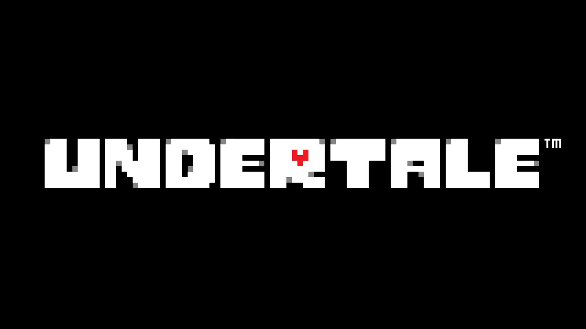
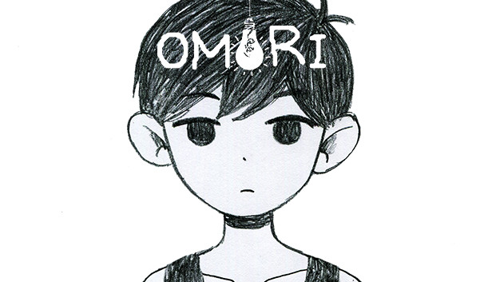
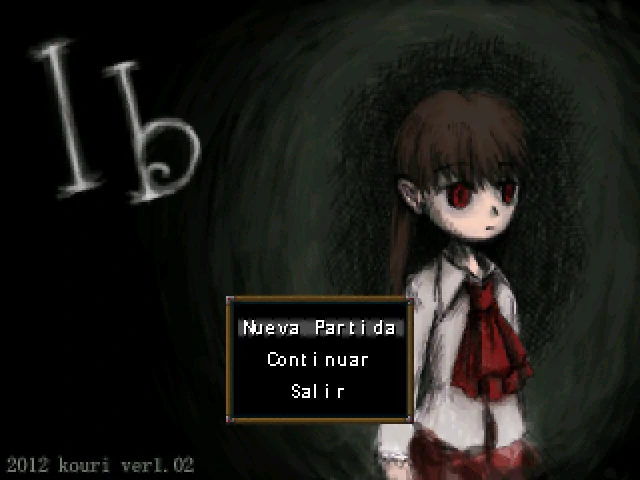

Aventuras:

- One Shot
- OneShot es un juego de aventuras y puzzles en donde controlas a Niko, un niño que repentinamente fue transportado a un mundo desconocido. Fue desarrollado por el estudio independiente Future Cat y publicado por Degica en el 2016.

- Undertale
- Undertale es un videojuego de rol en donde el jugador controla a un niño que ha caído al subsuelo: una gran región aislada bajo la superficie de la Tierra, separada por una barrera mágica. Fue creado en el 2015 por el desarrollador independiente Toby Fox.

- Dweller's Empty Path
- Dweller's Empty Path es un juego corto de RPG-Maker creado por Temmie Chang. Sigue la historia de una chica llamada Yoki, que se despierta de una pesadilla y decide dar un pequeño paseo para despejar su mente. Este juego es la continuación de Escaped Chasm. Sin embargo, se puede jugar como un juego independiente.
Horror:

- Omori
- Omori es un videojuego de rol publicado en el 2020. Se trata de un videojuego del género terror psicológico y surrealista que explora temas como la ansiedad, la depresión y el trauma. Fue creado por la desarrolladora independiente OMOCAT.

-
Mad father
- Mad Father es un videojuego de terror de software libre, RPG y puzzle en donde eres Aya, una niña de 11 años que descubre un macabro secreto que ocurrio en la residencia de Drevis. El juego fue hecho por el desarrollador japonés Sen, publicado en el 2012.

- Ib
- Ib es un videojuego gratuito de terror psicológico publicado y desarrollado por kouri, en donde una niña llamada Ib visita una galería de arte con sus padres, pero al quedarse sola se da cuenta que las pinturas están más vivas de lo que aparentan.

- Mogeko castle
- Mogeko Castle es un videojuego de terror japonés creado por Deep-Sea Prisoner en el año 2012, en donde jugamos como Yonaka Kurai, una chica de preparatoria la cual al tomar un tren se duerme, pero al despertar el tren se ha detenido en una estación desconocida.